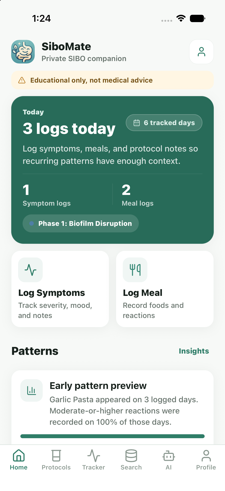
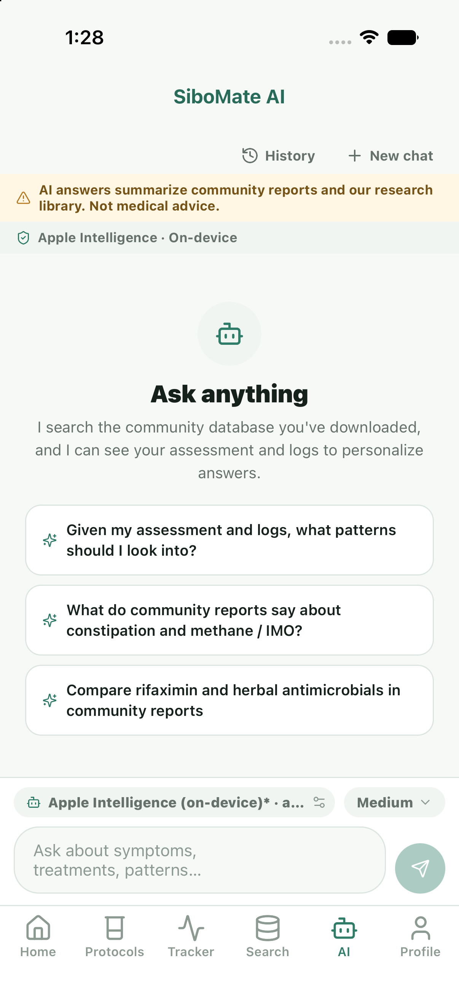
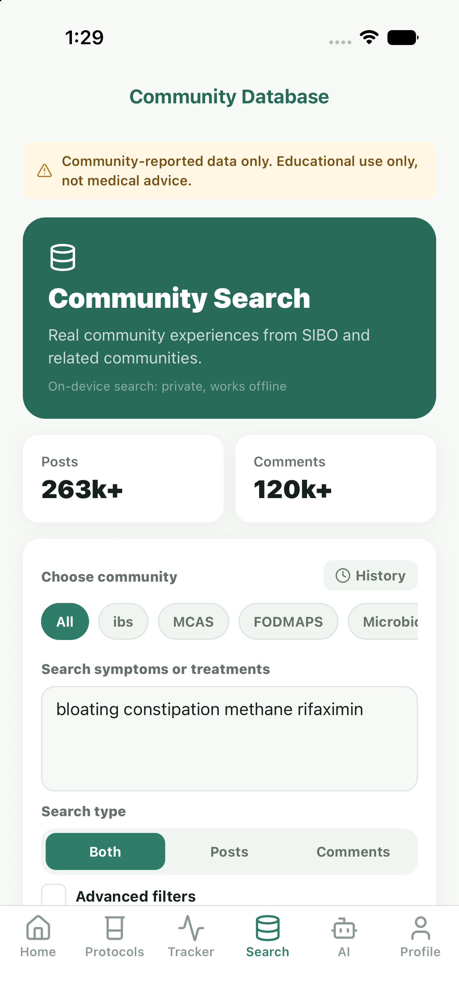
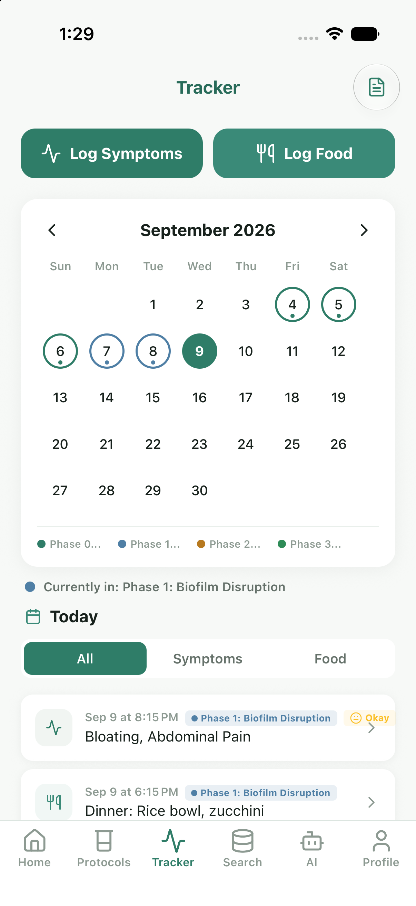
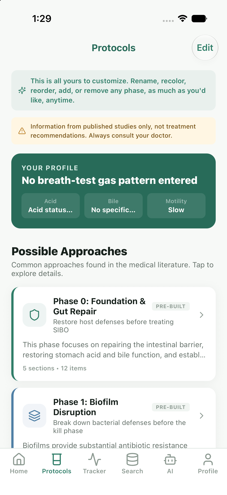

01↗
✓
Start with a clearer picture
A short educational assessment organizes the context behind your symptoms, history, and breath-test results.
SiboMate brings your symptoms, meals, protocols, research, and patterns into one private, local-first companion.

Gut health can feel like a hundred open tabs. SiboMate gives each one a place, without pretending your data is a diagnosis.
A short educational assessment organizes the context behind your symptoms, history, and breath-test results.
Log symptoms and meals in seconds, then look back for patterns worth bringing to your next appointment.
Explore protocols, patient-reported experiences, and cited research in one focused, searchable library.
SiboMate keeps the core of your health history close, then makes each optional destination visible before data moves.
Health history is stored locally using authenticated encryption.
On supported iPhones, selected context can be processed on-device.
Choose the provider and destination, review consent, and disconnect it whenever you want.
Backups are an explicit choice, with encryption designed to protect your history.
Each part of the app is designed to make the next useful step feel a little easier.

Use Apple on-device processing when supported, or connect a provider you choose. The app explains the destination and context before cloud AI is enabled.
Explore the app ↗
Search patient-reported experiences and cited research by symptom, treatment, or topic, then save what feels relevant to your conversation.
See what’s inside ↗
Capture symptoms and meals quickly, then turn a long stream of days into something you can reflect on.
Start noticing ↗
Read phase-by-phase summaries with research context and clear reminders to make health decisions with a qualified professional.
View plans ↓Core health history is local-first and encrypted. Optional AI is destination-bound and consent-led. Downloaded research can be searched locally, while optional services remain explicit.
Monthly, Annual, and Lifetime options are available through Apple. Any trial or introductory offer is shown in-app when you are eligible.
Subscriptions are billed through your Apple ID and renew automatically unless canceled in Apple subscriptions. Trial eligibility is determined by Apple.
No. SiboMate is an educational companion. It does not diagnose, treat, or replace care from a qualified healthcare professional.
Core health history is stored locally using authenticated encryption. Optional AI requests go to the provider and destination you choose after consent. Encrypted backups are opt-in.
SiboMate offers Monthly, Annual, and Lifetime options through Apple. Any trial or introductory offer is shown in-app when Apple determines that you are eligible.
After the research database is downloaded, local search can run on your phone. Optional cloud services still require their own connection and consent.